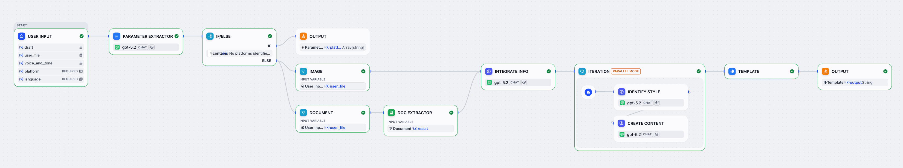
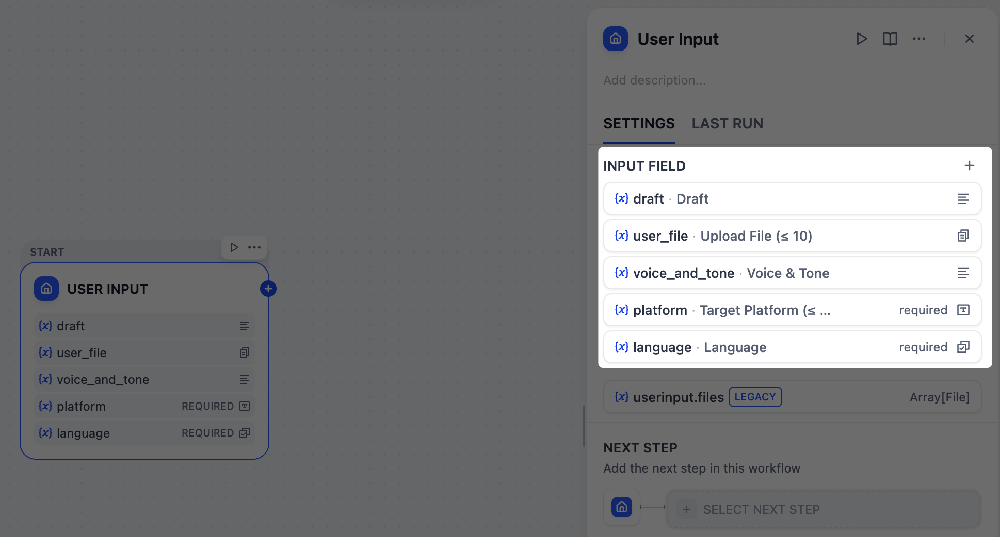
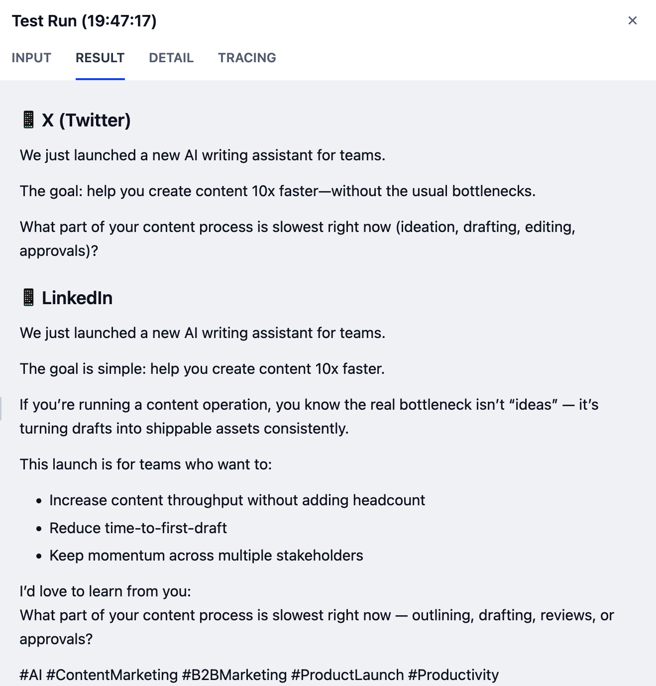

Orchestrate with Dify. Infer locally on AMD Radeon.
Reason, plan, use tools, manage memory, and finish a real task—then prove local execution on AMD Radeon.
Can the agent take a goal and finish a meaningful task?
Run inference locally—and explain how you made it faster.
The workflow owns context, memory, and decisions. The Radeon service owns local model inference.
Goal, private data, permissions, and completion criteria
Understand · plan · retrieve · use tools · verify
Execute the model with ROCm and preserve run evidence
Answer, action, sources, execution trace, and performance data
Optional first step:git clone https://github.com/langgenius/dify.git
cd dify
cd docker
cp .env.example .env
docker compose up -d
Task, private context, permissions, and done criteria
Query local knowledge and read or write useful memory
Call tools or subflows to complete the task step by step
Check results, retain sources, and recover safely
Do not stop at a fluent answer. Put planning, tools, memory, and verification into the workflow.
User goal, private context, permissions, and done criteria
Read local knowledge and memory, then choose the next action
Invoke the ROCm-backed local model and capture speed and VRAM
Use tools and check the result, sources, and constraints
Finish—or ask for input, re-plan, or exit safely
Overview → local inference and tool node → completed task and trace. Replace these references with project captures before submission.


Current images: official Dify Quick Start references · Final images: your agent overview, Radeon inference/tool node, and completed task
Time to first token and end-to-end task completion
Tokens/s under the exact model, quantization, and context
Peak VRAM at the same model and context length
Repeated completion rate, tool errors, and recovery paths
Show the model, data, and inference endpoint in the controlled environment
Scan to register for the AMD AI DevMaster Hackathon, choose Track 2, and build a locally deployed agent with Dify and Radeon.